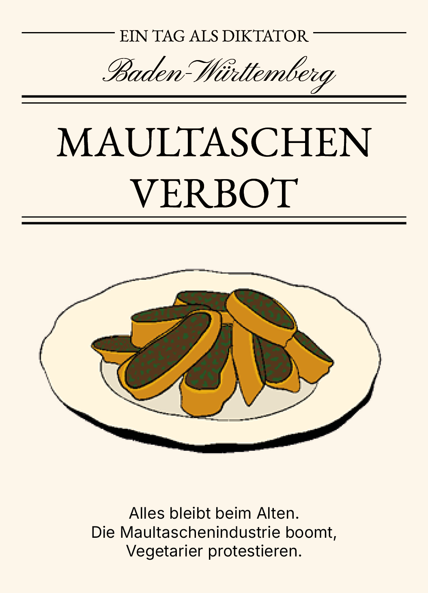
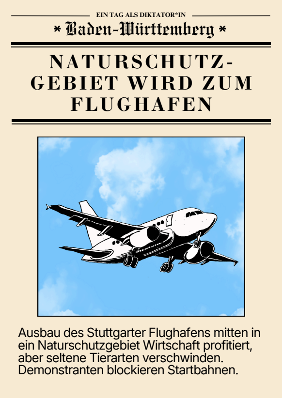
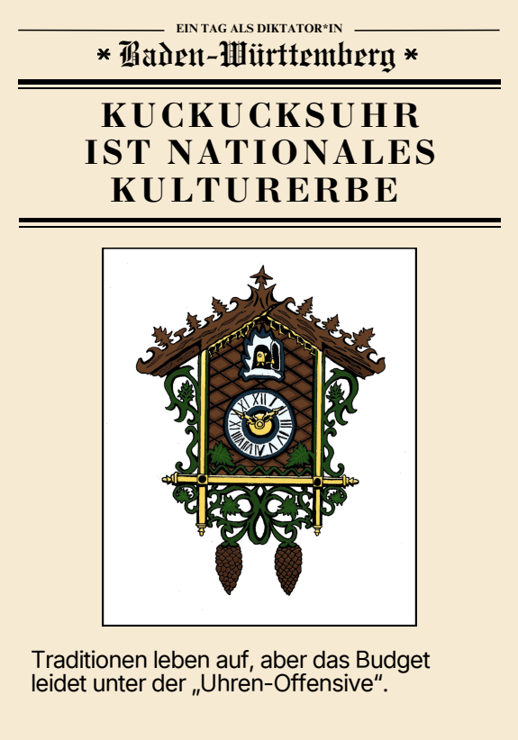
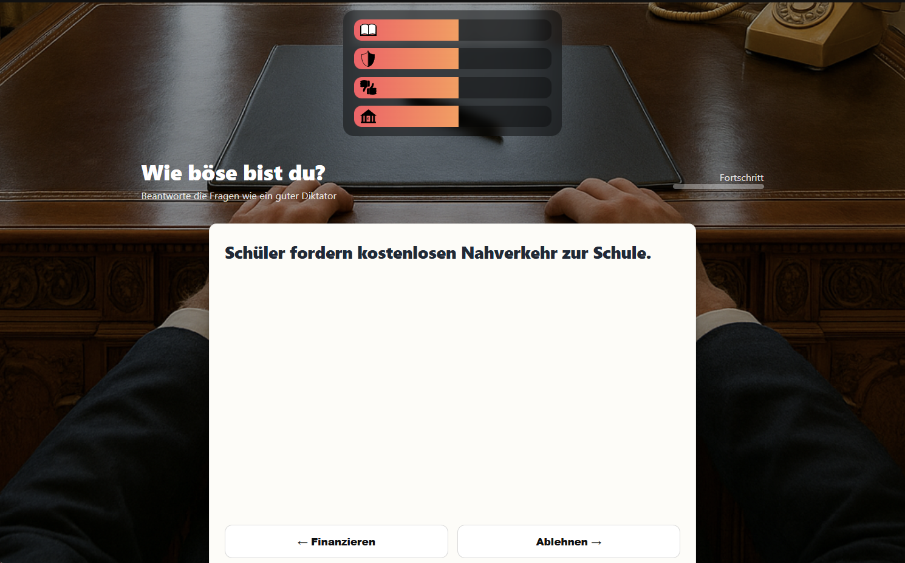
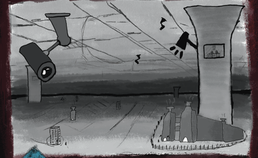

Interaktion · Coding
02 / INTERAKTION & CODING
Wie böse bist du?
Ein interaktives Entscheidungsspiel zur Landtagswahl Baden-Württemberg 2026.
Im Rahmen der Landtagswahl im März 2026 entwickelte unser Team ein interaktives Spiel, das junge Menschen dazu motivieren sollte, erstmals wählen zu gehen. Entscheidungen im Spiel beeinflussen die Zukunft des Landes und machen politische Konsequenzen erfahrbar.
Mein Beitrag: Game-Design, Hintergrundmusik und technische Umsetzung des Spiels.



Weitere Gestaltung aus dem Spiel
05 / STORYTELLING
Spaltung Sucks
Konzept für eine dystopische Graphic Novel
Im Rahmen der Social-Media-Kampagne „Spaltung Sucks“ entstand das Konzept für eine Graphic Novel, die sich gegen gesellschaftliche Spaltung richtet.
Die Geschichte spielt in einer dystopischen Zukunft, in der die Menschheit in zwei streng getrennte Gesellschaften aufgeteilt ist. Im Mittelpunkt steht ein Arbeiter aus der unteren Gesellschaft, der beginnt, das bestehende System zu hinterfragen und sich auf die Suche nach der Wahrheit macht.
Gestalterischer Fokus: Worldbuilding, gesellschaftskritisches Storytelling und die visuelle Ausarbeitung einer dystopischen Welt.
